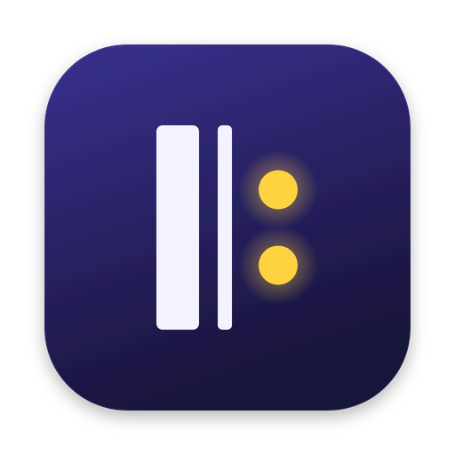
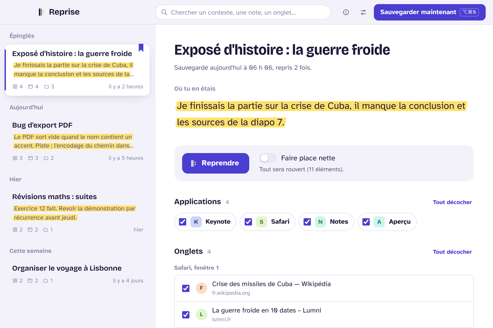
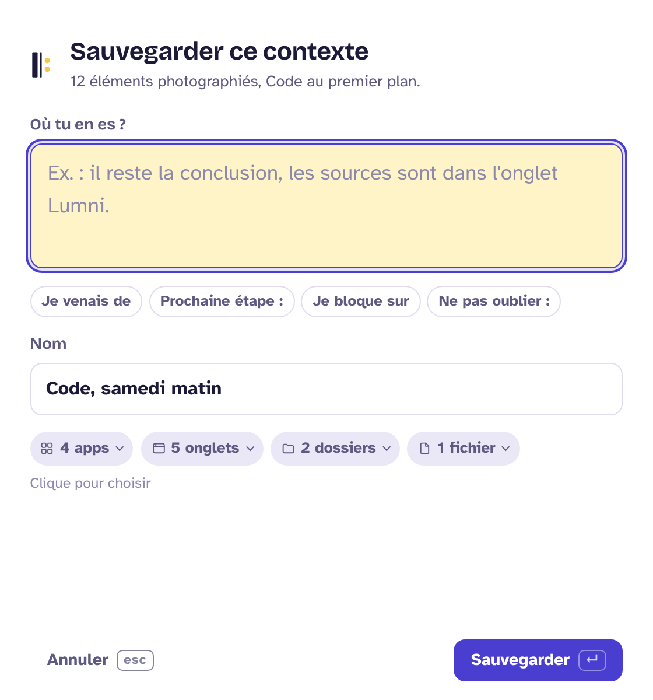
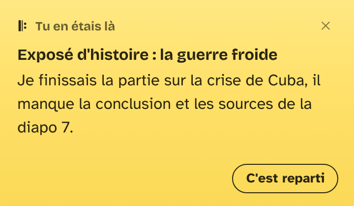

Reprise Code source sur GitHubUn raccourci sauvegarde tes apps, tes onglets, tes dossiers et tes fichiers ouverts, avec une phrase : où j'en étais. Un clic remet tout en place.

Depuis n'importe quelle app. Reprise photographie ce qui est ouvert.
Ce que tu faisais, la prochaine étape, ce qui bloquait. Entrée, c'est sauvegardé.
Plus tard, tout se rouvre à sa place et ta phrase t'attend sur un post-it.


.dmg depuis la dernière version.xattr -cr /Applications/Reprise.app, puis lance l'app.